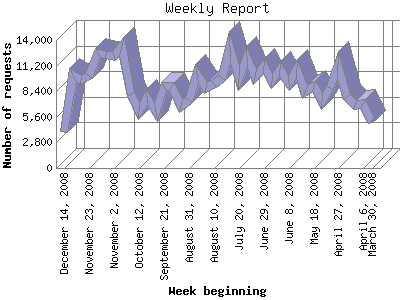

Analog 5.1
Analog 5.1 Report Magic 2.21
Report Magic 2.21The Weekly Report identifies the activity for each week within the report
time frame. Remember that one page hit can result in several server requests
as the images for each page are loaded.
Note: Depending on the
report time frame for this report the first and last week may not represent
a full seven day week, resulting in lower hits.

| Week beginning | Number of requests | Number of page requests | |
|---|---|---|---|
| 1. | March 30, 2008 | 5,016 | 954 |
| 2. | April 6, 2008 | 6,948 | 1,295 |
| 3. | April 13, 2008 | 6,885 | 1,285 |
| 4. | April 20, 2008 | 7,792 | 1,474 |
| 5. | April 27, 2008 | 11,231 | 2,065 |
| 6. | May 4, 2008 | 8,791 | 1,539 |
| 7. | May 11, 2008 | 7,353 | 1,420 |
| 8. | May 18, 2008 | 8,926 | 1,554 |
| 9. | May 25, 2008 | 8,327 | 1,661 |
| 10. | June 1, 2008 | 10,797 | 1,976 |
| 11. | June 8, 2008 | 9,250 | 1,730 |
| 12. | June 15, 2008 | 10,876 | 1,812 |
| 13. | June 22, 2008 | 9,564 | 1,651 |
| 14. | June 29, 2008 | 11,125 | 1,901 |
| 15. | July 6, 2008 | 9,993 | 1,737 |
| 16. | July 13, 2008 | 12,143 | 2,052 |
| 17. | July 20, 2008 | 9,874 | 1,664 |
| 18. | July 27, 2008 | 13,289 | 2,145 |
| 19. | August 3, 2008 | 9,857 | 1,738 |
| 20. | August 10, 2008 | 9,178 | 1,622 |
| 21. | August 17, 2008 | 8,756 | 1,540 |
| 22. | August 24, 2008 | 10,276 | 1,628 |
| 23. | August 31, 2008 | 7,423 | 1,290 |
| 24. | September 7, 2008 | 6,832 | 1,126 |
| 25. | September 14, 2008 | 8,954 | 1,569 |
| 26. | September 21, 2008 | 8,969 | 1,312 |
| 27. | September 28, 2008 | 6,134 | 1,205 |
| 28. | October 5, 2008 | 7,783 | 1,447 |
| 29. | October 12, 2008 | 6,254 | 1,290 |
| 30. | October 19, 2008 | 8,131 | 1,351 |
| 31. | October 26, 2008 | 13,294 | 1,678 |
| 32. | November 2, 2008 | 12,296 | 1,626 |
| 33. | November 9, 2008 | 12,410 | 1,711 |
| 34. | November 16, 2008 | 12,597 | 1,733 |
| 35. | November 23, 2008 | 10,025 | 1,440 |
| 36. | November 30, 2008 | 9,651 | 1,380 |
| 37. | December 7, 2008 | 10,162 | 1,516 |
| 38. | December 14, 2008 | 3,992 | 635 |
Most active week beginning July 27, 2008 : 2,145 pages sent. 13,294 requests handled.
Weekly average: 1,546 pages sent. 9,240 requests handled.
This report was generated on December 17, 2008 15:14.
Report time frame March 31, 2008 17:55 to December 16, 2008 23:51.
| Web statistics report produced by: | |
| Analog 5.1 | Report Magic 2.21 |